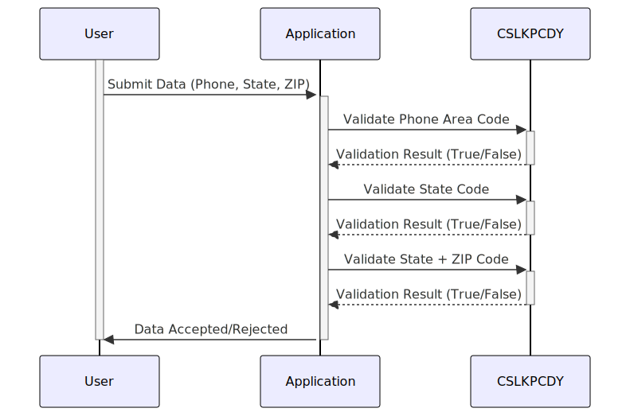

Gerado em: 1º de outubro de 2024
Título do Documento: Data Integrity Guardian - Especificação do Repositório de Códigos de Pesquisa
Descrição Resumida:
Este documento descreve a funcionalidade e as regras de negócios do módulo “Data Integrity Guardian”, com foco específico no repositório de códigos de pesquisa (CSLKPCDY.cpy). Este módulo desempenha um papel crucial na manutenção da precisão e consistência dos dados, definindo valores aceitáveis para códigos de área de telefone, códigos de estado dos EUA e combinações de código de estado dos EUA + primeiros dois dígitos do CEP. Isso garante que apenas dados válidos e padronizados entrem no sistema.
Histórias do Usuário: Como analista de dados, preciso ter certeza de que apenas códigos de área de telefone, códigos de estado dos EUA e códigos postais válidos sejam usados em nossos sistemas para manter a integridade dos dados e garantir uma análise precisa.
Épico Relacionado: 9 - Utilitários do Sistema
Requisitos Técnicos:
XXX).VALID-PHONE-AREA-CODE dentro do arquivo CSLKPCDY.cpy.TRUE) ou não (FALSE).XX).VALID-US-STATE-CODE dentro do arquivo CSLKPCDY.cpy.TRUE) ou não (FALSE).XX).XX).XXXX) e verifica se essa combinação está presente na lista VALID-US-STATE-ZIP-CD2-COMBO dentro do arquivo CSLKPCDY.cpy.TRUE) ou não (FALSE).Modelos Relacionados
Configurações:
CSLKPCDY.cpy: Este arquivo contém as seguintes listas:
VALID-PHONE-AREA-CODE: Lista de códigos de área de telefone norte-americanos válidos.VALID-US-STATE-CODE: Lista de códigos de estado dos EUA válidos.VALID-US-STATE-ZIP-CD2-COMBO: Lista de combinações válidas de códigos de estado dos EUA e os primeiros dois dígitos dos códigos postais.Melhorias de Código:
Melhorias de Segurança:
CSLKPCDY.cpy.CSLKPCDY.cpy para detectar quaisquer alterações não autorizadas.Diagrama Conceitual:
–Made by “Smart Engineering” (by Compass.UOL)–